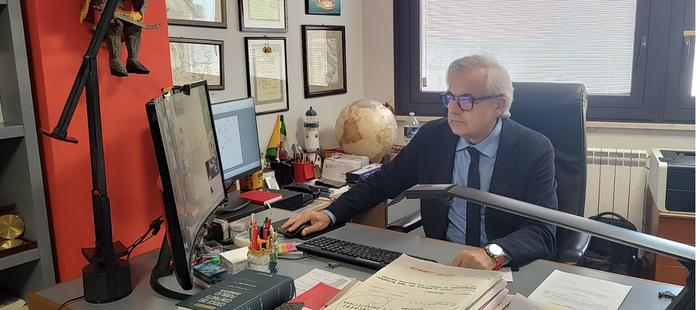
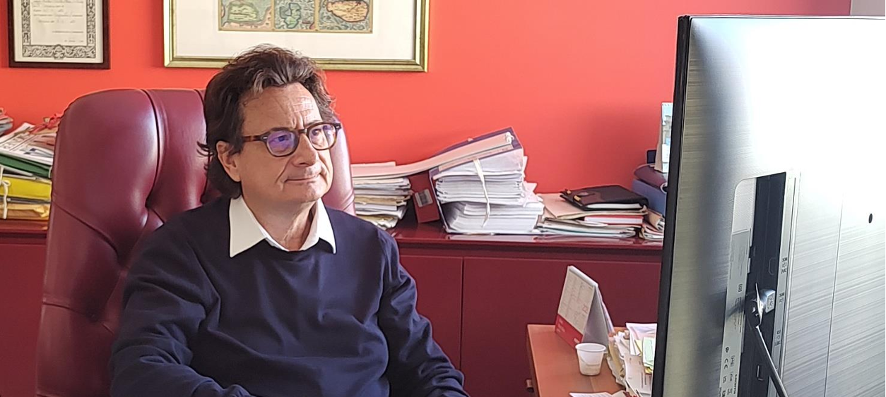
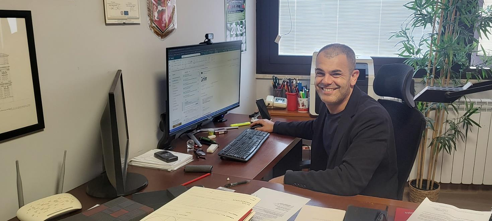

Ingegnere Civile Edile — Fondatore
Laureato in Ingegneria Civile Edile a Palermo nel 1985. Oltre 40 anni di attività professionale. Consigliere dell'Ordine degli Ingegneri di Messina, già Consulente dell'Assemblea Regionale Siciliana e Amministratore Delegato di ATO ME 3 S.p.A. Iscritto all'Albo n.1238.
Scarica CV completo
Ingegnere Civile Edile — Socio
Laureato in Ingegneria Civile Edile a Messina nel 1998. Libero professionista dal 1998, consulente tecnico per istituti bancari, imprese di costruzioni e aziende commerciali. Iscritto all'Albo n.2232.
Scarica CV completo
Architetto — Restauro e Design d'Interni
Laureato in Architettura a Reggio Calabria nel 2015. Specializzato in restauro conservativo e design di interni per residenze e locali commerciali. Già Consigliere dell'Ordine degli Architetti di Messina. Iscritto all'Albo n.2230.
Scarica CV completo